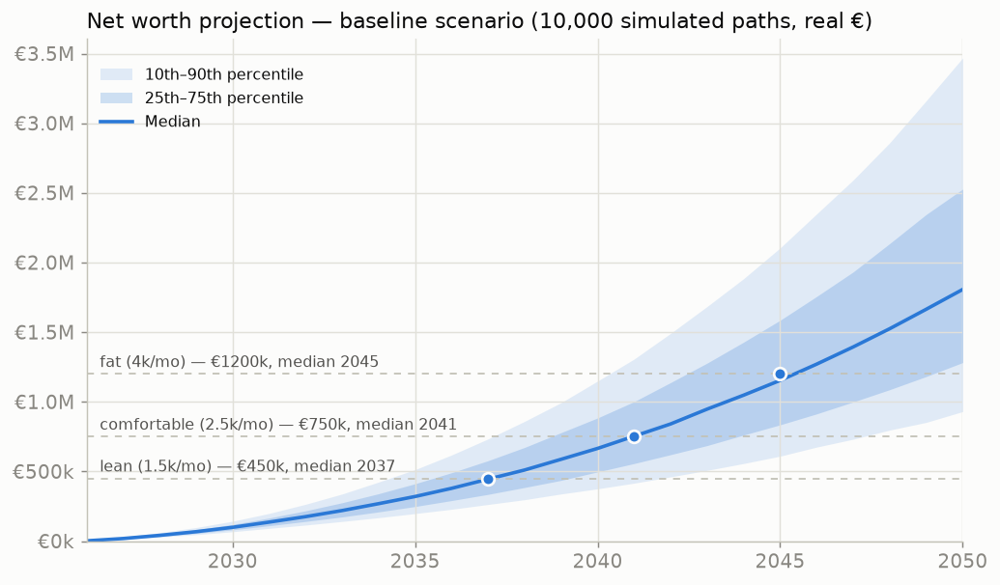
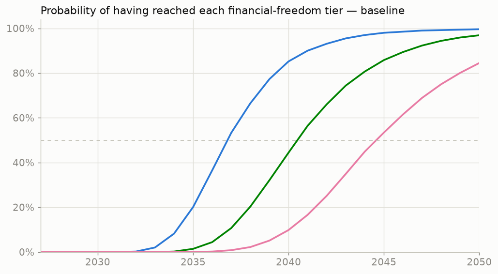
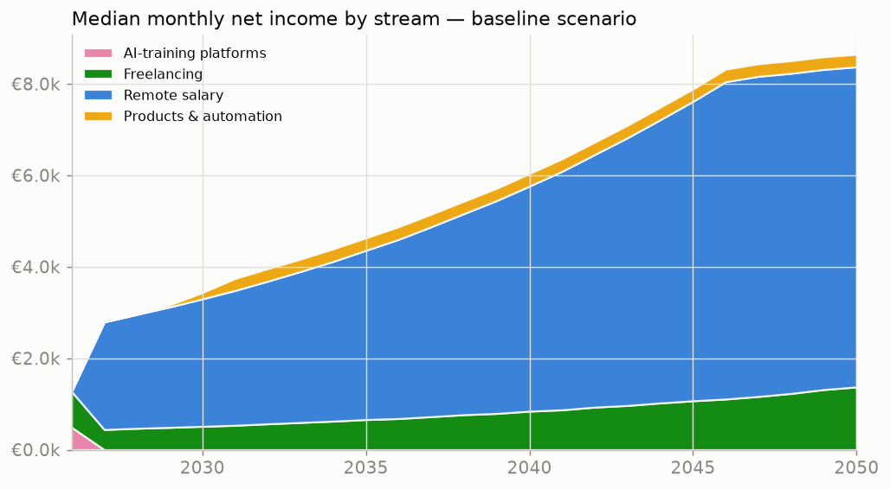
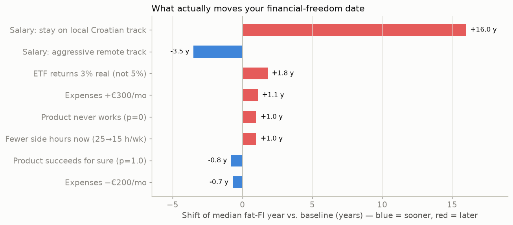

← Income opportunities dashboard · EO Monitor
10,000 Monte Carlo paths × 25 years, monthly steps, real €. From: geodesy student, €0 saved, 25 h/wk → target: €4,000/mo passive (€1.2M at 4% SWR).
Loading results…




The salary track (remote-EU vs. local) is worth ±16 years — more than every other lever combined. Full interpretation, phase-by-phase playbook and decision gates: LIFEPLAN.md.
| Scenario | Lean €450k | Comfortable €750k | Fat €1.2M | Fat lifetime prob. |
|---|